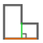
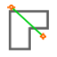
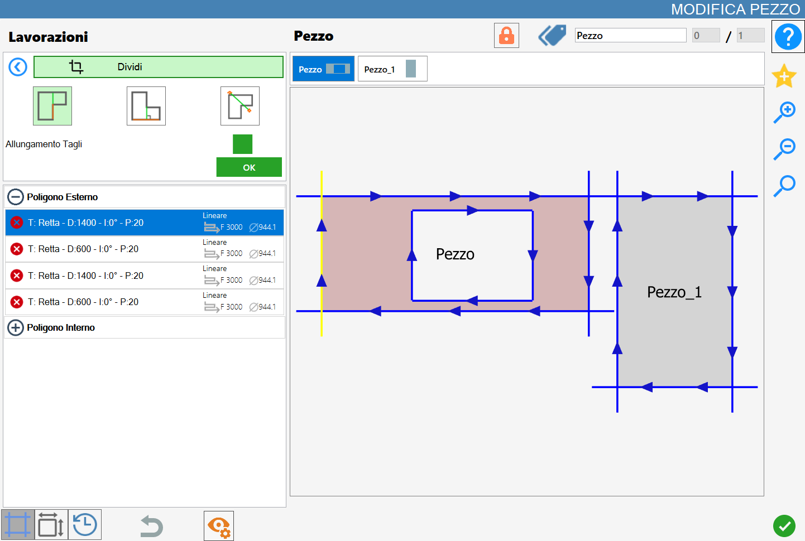
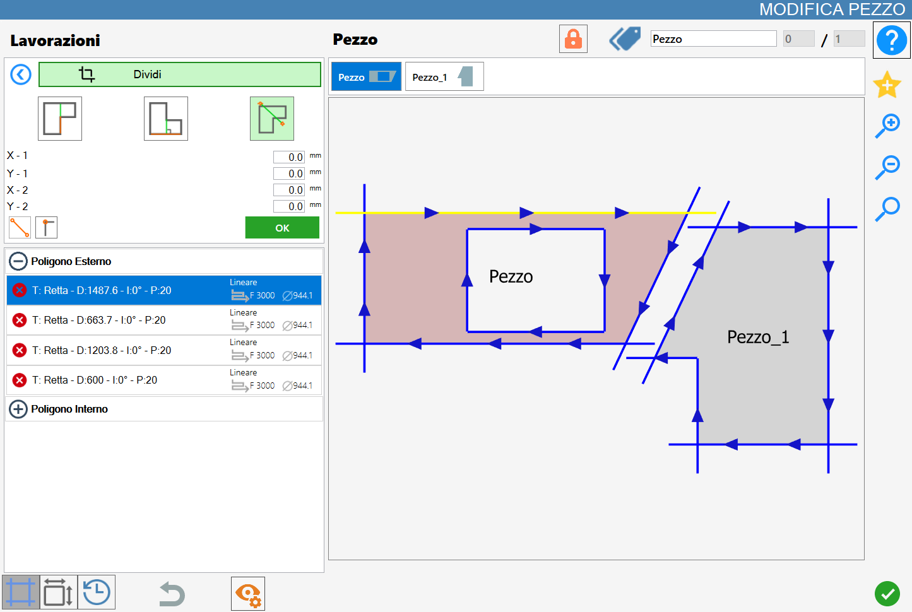

La funzione ‘Dividi’ permette di tagliare il pezzo utilizzando il riferimento, il lato, una linea perpendicolare o una linea personalizzata.
L’interfaccia per questa funzione assomiglia alla seguente immagine:

Parametri
Per utilizzare questa lavorazione, occorre innanzitutto scegliere una delle tre modalità disponibili, selezionando il pulsante corrispondente:
Taglio parallelo | |
 | Taglio ortogonale |
 | Taglio passante per due punti |
Parametri per ‘Taglio parallelo’ e ‘Taglio ortogonale’
Per i prossimi due pulsanti sottostanti c'è la possibilità di abilitare o meno questa funzione cliccando sulla checkbox alla destra della scritta ‘Allungamento tagli’.
Allungamento tagli | Questa funzione consente all’operatore di prolungare il taglio applicato al lato selezionato, estendendolo fino a coprire l’intera lunghezza del pezzo nella direzione del taglio. |
Offset | L’operatore ha la possibilità di impostare la distanza del taglio lungo l’asse trasversale, misurata rispetto al centro del lato di riferimento. |
Parametri per ‘Taglio passante per due punti’
Per il prossimo tasto c'è la possibilità di andare a definire le coordinate dei due punti che costituiscono la linea di divisione.
Impostazione parametri punti linea di divisione | All’attivazione della funzione, saranno disponibili quattro campi parametrici nei quali l’operatore potrà specificare le coordinate (X, Y) dei punti iniziale e finale della linea di taglio. |
 | Orientamento taglio |
Aggancio vertici |
Esecuzione della lavorazione
È possibile applicare la lavorazione premendo il pulsante a sinistra del taglio opportuno nella lista dei poligoni.
Un’icona rossa con una 'X' indica che la lavorazione non può essere applicata al taglio desiderato.
Taglio parallelo
Nella seguente immagine è stato eseguito un taglio parallelo sul pezzo già visualizzato nella copertina del capitolo:

Taglio ortogonale
Nella seguente immagine è stato eseguito un taglio ortogonale sul pezzo già visualizzato nella copertina del capitolo:

Taglio passante per due punti
Nella seguente immagine è stato eseguito un taglio passante per due punti utilizzando la funzione di aggancio dei vertici sul pezzo già visualizzato nella copertina del capitolo:

Nella seguente immagine è stato eseguito un taglio passante per due punti senza utilizzare alcuna funzione particolare sul pezzo già visualizzato nella copertina del capitolo:

Divisione dei pezzi
Quando al pezzo selezionato sono stati associati uno o più pezzi tramite lavorazioni di Divisione, compare nella parte superiore del pannello “Modifica Pezzo” un pulsante specifico per la gestione dei pezzi associati.
 | Dividi pezzi |
|---|
Prima della divisione, i pezzi associati vengono gestiti in modo unificato all'interno dell’area di lavoro. In questo stato, si crea un blocco composto da più elementi che subiranno le medesime operazioni, senza essere ancora suddivisi.
Ad esempio, quando uno dei pezzi generati tramite divisione viene aggiunto all’area di lavoro dalla lista dei pezzi, anche tutti gli altri elementi associati vengono automaticamente inseriti.
Alla pressione del pulsante Dividi Pezzi, ogni pezzo generato tramite dividi verrà dissociato dal pezzo originale e trattato come elemento indipendente.
Successivamente, sia la lista dei pezzi associati, precedentemente visibile sopra l’anteprima nel pannello Modifica Pezzo, sia il pulsante per la divisione dei pezzi scompariranno dall’interfaccia.